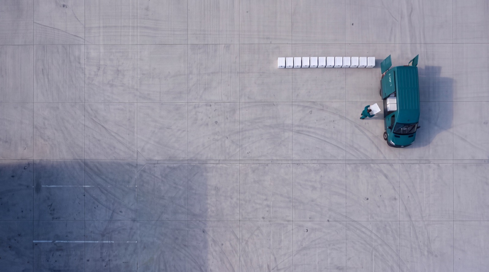
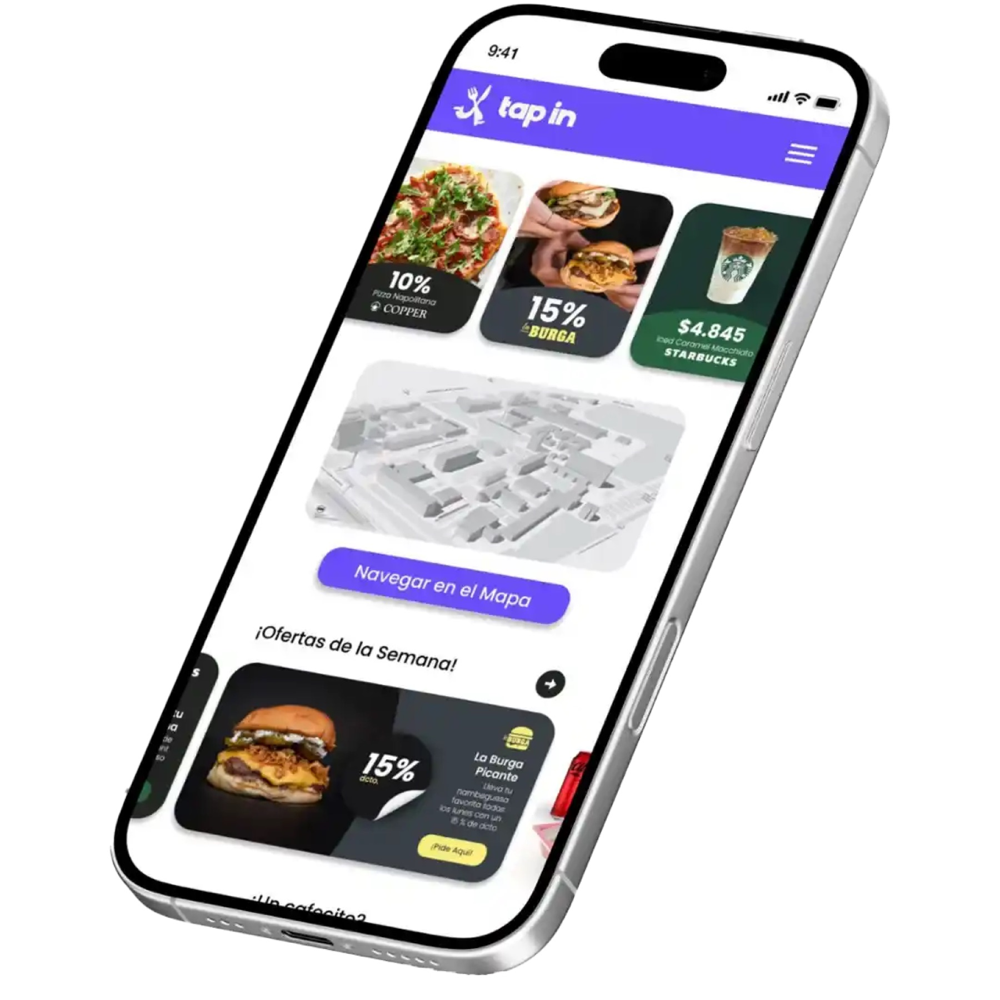

<title>Works destacados</title>
<meta name="viewport" content="width=device-width, initial-scale=1">
<meta name="claude:viewport-fit-sides" content="cover">
<link rel="preconnect" href="https://fonts.googleapis.com">
<link rel="preconnect" href="https://fonts.gstatic.com" crossorigin>
<link rel="stylesheet" href="https://fonts.googleapis.com/css2?family=Geist:wght@400;500;600&family=Geist+Mono:wght@400&display=swap">
<style>
    /* Tres direcciones para los tres destacados de la sección Works (Llegó Farma, Tap In, Mend), con el marco de
       Agustín Design (C · Índice: Geist, Geist Mono, negro y grises) y la identidad de cada proyecto adentro.
       Grilla de 12 columnas con el margen del home */
    :root {
        --negro: #0B0B0B; --grafito: #1A1A19; --gris-oscuro: #3A3A38; --gris-medio: #8E8E8B; --gris-claro: #D9D9D6; --blanco: #F5F5F3;
        --texto-2: rgba(245, 245, 243, 0.66); --texto-3: rgba(245, 245, 243, 0.42); --linea: rgba(245, 245, 243, 0.14);
        --vivo: #3FCF8E;
        --lf: #0F2A2D; --lf-2: #1E4A4F; --tp: #2D2560; --tp-2: #4A3CAE; --tp-3: #6B5CE7; --md: #0D2024; --md-2: #577A80; --md-3: #91BABE;
        --sans: 'Geist', system-ui, sans-serif; --mono: 'Geist Mono', ui-monospace, monospace;
        --margen: clamp(16px, 2.2vw, 32px); --medianil: 16px;
        --ease: cubic-bezier(0.16, 1, 0.3, 1); --morph: cubic-bezier(0.76, 0, 0.24, 1);
        color-scheme: dark;
    }
    * { box-sizing: border-box; }
    html, body { overflow-x: clip; }
    body { margin: 0; background: var(--negro); color: var(--blanco); font: 15px / 1.5 var(--sans); -webkit-font-smoothing: antialiased; }
    a, button { font: inherit; color: inherit; }
    :focus-visible { outline: 2px solid var(--blanco); outline-offset: 3px; }
    img { display: block; max-width: 100%; }
    .mono { font: 400 12px / 1.4 var(--mono); letter-spacing: 0.01em; }
    .gris { color: var(--texto-3); }
    .grilla { display: grid; grid-template-columns: repeat(12, minmax(0, 1fr)); column-gap: var(--medianil); padding-left: max(var(--margen), env(safe-area-inset-left, 0px)); padding-right: max(var(--margen), env(safe-area-inset-right, 0px)); }
    .v { display: none; }
    [data-v="a"] .va, [data-v="b"] .vb, [data-v="c"] .vc { display: block; }

    /* =======================================================
       PIEZAS COMPARTIDAS
       ======================================================= */
    /* --- 1. NAVEGADOR Y TELÉFONO --- */
    /* El sitio largo se recorre moviendo object-position: la imagen queda del ancho de la ventana y baja sola */
    .nav-v { display: flex; flex-direction: column; overflow: hidden; border-radius: 12px; background: #FFFFFF; box-shadow: 0 0 0 1px rgba(255, 255, 255, 0.08), 0 50px 90px -40px rgba(0, 0, 0, 0.8); }
    .nav-v .barra { flex: none; display: flex; align-items: center; gap: 6px; height: 30px; padding: 0 12px; background: #EDEDEA; }
    .nav-v .barra i { width: 9px; height: 9px; border-radius: 50%; background: #CFCFCB; }
    .nav-v .barra span { margin: 0 auto; padding: 3px 28px; border-radius: 6px; background: #FFFFFF; color: #6A6A66; font: 400 11px var(--mono); }
    .nav-v .pant { position: relative; flex: 1; min-height: 0; }
    .pant img { position: absolute; inset: 0; width: 100%; height: 100%; object-fit: cover; object-position: 50% 0%; }
    .recorre { animation: recorre var(--dura, 18s) cubic-bezier(0.45, 0, 0.55, 1) infinite alternate; }
    @keyframes recorre { 0%, 8% { object-position: 50% 0%; } 92%, 100% { object-position: 50% 100%; } }
    .tel { position: relative; aspect-ratio: 9 / 19.5; padding: 1.4%; border-radius: 15% / 7%; background: linear-gradient(150deg, #5B6A6C, #1F2A2C 22%, #3A4749 52%, #131B1C 78%, #48585A); box-shadow: inset 0 0 0 1px rgba(255, 255, 255, 0.18), 0 50px 90px -40px rgba(0, 0, 0, 0.8); }
    .tel .pant { position: absolute; inset: 1.4%; overflow: hidden; border: 3px solid #050708; border-radius: 13.5% / 6.3%; background: #577A80; }
    .tel .pant::before { content: ''; position: absolute; left: 50%; top: 1.6%; z-index: 2; width: 30%; height: 3.6%; margin-left: -15%; border-radius: 99px; background: #050708; }

    /* --- 2. MARCAS --- */
    .marca { display: block; background: currentColor; -webkit-mask: var(--svg) left center / contain no-repeat; mask: var(--svg) left center / contain no-repeat; }

    /* --- 3. BOTÓN DE CASO --- */
    .caso { display: inline-flex; align-items: center; gap: 10px; padding: 12px 20px; border-radius: 999px; background: var(--blanco); color: var(--negro); font: 500 14px var(--sans); text-decoration: none; transition: gap 200ms var(--ease), background-color 200ms; }
    .caso i { font-style: normal; transition: transform 200ms var(--ease); }
    @media (hover: hover) { .caso:hover { gap: 14px; } .caso:hover i { transform: translateX(2px); } }
    .vivo { display: inline-flex; align-items: center; gap: 8px; }
    .vivo::before { content: ''; width: 6px; height: 6px; border-radius: 50%; background: var(--vivo); box-shadow: 0 0 0 3px rgba(63, 207, 142, 0.18); }

    /* --- 4. ENTRADA Y SALIDA DE LA SECCIÓN --- */
    /* Un trozo del home antes y después, para ver la sección en contexto */
    .antes { padding-block: clamp(80px, 10vw, 140px) clamp(40px, 5vw, 72px); }
    .antes .fila { grid-column: 1 / -1; display: flex; justify-content: space-between; gap: 16px; padding-bottom: 14px; border-bottom: 1px solid var(--linea); }
    .antes h2 { grid-column: 1 / -1; margin: 28px 0 0; font: 500 clamp(64px, 13vw, 220px) / 0.86 var(--sans); letter-spacing: -0.065em; }
    .antes h2 sup { font: 400 14px var(--mono); letter-spacing: 0; vertical-align: top; margin-left: 10px; color: var(--texto-3); }
    .despues { padding-block: clamp(72px, 9vw, 128px); border-top: 1px solid var(--linea); }
    .despues h2 { grid-column: 1 / span 6; margin: 0; font: 500 clamp(44px, 7vw, 112px) / 0.9 var(--sans); letter-spacing: -0.06em; }
    .despues p { grid-column: 9 / -1; align-self: end; margin: 0; color: var(--texto-2); }

    /* =======================================================
       PRESENTACIÓN DEL COMPARADOR
       ======================================================= */
    .intro { padding-block: 56px 48px; background: var(--gris-claro); color: #3A3A38; row-gap: 28px; }
    .intro .rot { grid-column: 1 / span 3; color: #6A6A66; }
    .intro h1 { grid-column: 4 / -1; margin: 0; color: var(--negro); font: 500 clamp(30px, 3.4vw, 52px) / 1.02 var(--sans); letter-spacing: -0.045em; text-wrap: balance; }
    .intro ul { grid-column: 4 / span 7; display: grid; gap: 10px; margin: 0; padding: 0; list-style: none; }
    .intro li { display: grid; grid-template-columns: 26px 1fr; font-size: 15px; line-height: 1.45; }
    .intro li b { font-weight: 500; color: var(--negro); }
    .ops { padding-block: 36px; row-gap: 12px; background: #E6E6E3; color: #3A3A38; }
    .ops .rot { grid-column: 1 / span 3; color: #6A6A66; padding-top: 18px; }
    .ops .lista { grid-column: 4 / -1; display: grid; grid-template-columns: repeat(3, minmax(0, 1fr)); gap: 12px; }
    .op { position: relative; display: flex; flex-direction: column; gap: 8px; padding: 18px 18px 20px; border: 0; border-radius: 14px; background: #F5F5F3; text-align: left; cursor: pointer; box-shadow: inset 0 0 0 1px rgba(11, 11, 11, 0.08); transition: box-shadow 200ms var(--ease), transform 200ms var(--ease); }
    .op strong { color: var(--negro); font: 500 19px / 1.15 var(--sans); letter-spacing: -0.03em; }
    .op p { margin: 0; color: #55554F; font-size: 14px; line-height: 1.45; }
    .op .rec { position: absolute; top: 16px; right: 16px; padding: 3px 8px; border-radius: 99px; background: var(--negro); color: var(--blanco); font: 400 11px var(--mono); }
    .op[aria-pressed="true"] { box-shadow: inset 0 0 0 2px var(--negro); }
    @media (hover: hover) { .op:hover { transform: translateY(-2px); } }
    .selector { position: fixed; z-index: 50; left: 50%; bottom: max(16px, env(safe-area-inset-bottom, 0px)); display: flex; gap: 4px; padding: 5px; border-radius: 999px; background: rgba(26, 26, 25, 0.86); backdrop-filter: blur(14px); -webkit-backdrop-filter: blur(14px); box-shadow: inset 0 0 0 1px var(--linea), 0 20px 40px -16px rgba(0, 0, 0, 0.7); translate: -50% 0; }
    .selector button { display: inline-flex; align-items: center; gap: 8px; min-height: 40px; padding: 0 16px; border: 0; border-radius: 999px; background: transparent; color: var(--texto-2); font: 400 13px var(--sans); cursor: pointer; transition: background-color 160ms, color 160ms; }
    .selector b { font: 400 12px var(--mono); }
    .selector button[aria-pressed="true"] { background: var(--blanco); color: var(--negro); }

    /* =======================================================
       A · PORTADA
       ======================================================= */
    /* Cada proyecto es una portada a pantalla completa con su propio mundo (foto, color, pieza). El marco de Agustín
       Design va encima, siempre igual: rótulos arriba, nombre completo, resultado y botón abajo. La portada siguiente
       se destapa de abajo hacia arriba y la anterior se aleja */
    .a-pista { position: relative; height: 420svh; }
    .a-fijo { position: sticky; top: 0; height: 100svh; overflow: hidden; background: var(--negro); }
    .a-cov { --r: 1; --sale: 0; position: absolute; inset: 0; clip-path: inset(calc((1 - var(--r)) * 100%) 0 0 0); }
    .a-mundo { position: absolute; inset: 0; transform: scale(calc(1 + var(--sale) * -0.06)); transform-origin: 50% 0%; filter: brightness(calc(1 - var(--sale) * 0.55)); }
    .a-cov[data-i="0"] .a-mundo { background: var(--lf); }
    .a-cov[data-i="0"] .a-mundo > img { position: absolute; inset: 0; width: 100%; height: 100%; object-fit: cover; opacity: 0.55; }
    .a-cov[data-i="0"] .a-mundo::after { content: ''; position: absolute; inset: 0; background: linear-gradient(90deg, rgba(8, 22, 24, 0.92) 0%, rgba(8, 22, 24, 0.55) 45%, rgba(8, 22, 24, 0.15) 100%); }
    .a-cov[data-i="1"] .a-mundo { background: radial-gradient(60% 55% at 78% 22%, #8E81F5, transparent 70%), radial-gradient(120% 100% at 50% 0%, var(--tp-3), var(--tp-2) 52%, var(--tp)); }
    .a-cov[data-i="2"] .a-mundo { background: radial-gradient(70% 70% at 80% 10%, rgba(200, 228, 230, 0.7), transparent 60%), linear-gradient(120deg, #1E3C41, var(--md-2) 55%, var(--md-3)); }
    .a-marco { position: relative; z-index: 2; height: 100%; padding-block: 76px clamp(28px, 5svh, 56px); grid-template-rows: auto 1fr auto; row-gap: 24px; }
    .a-tope { grid-column: 1 / -1; display: grid; grid-template-columns: subgrid; padding-bottom: 12px; border-bottom: 1px solid rgba(255, 255, 255, 0.2); color: rgba(255, 255, 255, 0.72); }
    .a-tope > :nth-child(1) { grid-column: 1 / span 3; } .a-tope > :nth-child(2) { grid-column: 4 / span 5; } .a-tope > :nth-child(3) { grid-column: 9 / -1; text-align: right; }
    .a-txt { grid-column: 1 / span 5; grid-row: 3; display: flex; flex-direction: column; align-items: flex-start; gap: 18px; translate: 0 calc((1 - var(--r)) * 60px); }
    .a-txt h3 { margin: 0; font: 500 clamp(56px, 6.4vw, 120px) / 0.86 var(--sans); letter-spacing: -0.06em; }
    .a-txt p { margin: 0; max-width: 30ch; font: 400 clamp(17px, 1.35vw, 21px) / 1.35 var(--sans); letter-spacing: -0.015em; color: rgba(255, 255, 255, 0.86); }
    .a-txt dl { display: flex; gap: 28px; margin: 4px 0 6px; }
    .a-txt dt { color: rgba(255, 255, 255, 0.6); } .a-txt dd { margin: 4px 0 0; font: 500 22px var(--sans); letter-spacing: -0.03em; }
    .a-pieza { grid-column: 6 / -1; grid-row: 2 / span 2; position: relative; display: grid; place-items: center; min-height: 0; translate: 0 calc((1 - var(--r)) * 12svh); }
    .a-pieza .nav-v { width: 100%; height: min(100%, 62svh); max-height: calc((100vw - 2 * var(--margen)) * 0.58 * 0.68); }
    .a-pieza .tel { height: min(100%, 72svh); }
    .a-pieza .mend { position: absolute; left: 0; top: 8%; width: min(44%, 300px); aspect-ratio: 370 / 100; color: #FFFFFF; opacity: 0.95; }
    .a-pieza .tel { margin-left: 30%; }
    .a-pista-n { position: absolute; z-index: 3; right: max(var(--margen), env(safe-area-inset-right, 0px)); top: 50%; display: flex; flex-direction: column; gap: 6px; translate: 0 -50%; }
    .a-pista-n i { width: 3px; height: 28px; border-radius: 3px; background: rgba(255, 255, 255, 0.25); transition: background-color 200ms; }
    .a-pista-n i.on { background: #FFFFFF; }

    /* =======================================================
       B · ÍNDICE CON VISOR
       ======================================================= */
    /* El índice del marco a la izquierda (nombre, año, y el activo abierto con su resultado) y un solo visor a la
       derecha que cambia de proyecto y de forma: navegador para los sitios, teléfono para la app. El sitio se recorre
       con el scroll. Teclas 1, 2 y 3 para saltar */
    .b-pista { position: relative; height: 400svh; }
    .b-fijo { position: sticky; top: 0; height: 100svh; overflow: hidden; padding-block: 72px clamp(28px, 5svh, 48px); grid-template-rows: auto 1fr auto; row-gap: 24px; }
    .b-cab { grid-column: 1 / -1; display: flex; justify-content: space-between; gap: 16px; padding-bottom: 12px; border-bottom: 1px solid var(--linea); }
    .b-lista { grid-column: 1 / span 5; grid-row: 2; align-self: center; display: flex; flex-direction: column; margin: 0; padding: 0; list-style: none; }
    .b-fila { border-bottom: 1px solid var(--linea); }
    .b-fila > button { display: grid; grid-template-columns: 34px 1fr auto; align-items: baseline; width: 100%; padding: 16px 0 14px; border: 0; background: none; text-align: left; cursor: pointer; opacity: 0.32; transition: opacity 200ms var(--ease); }
    .b-fila h3 { margin: 0; font: 500 clamp(36px, 4.4vw, 76px) / 0.95 var(--sans); letter-spacing: -0.055em; }
    .b-fila.on > button { opacity: 1; }
    @media (hover: hover) { .b-fila:not(.on) > button:hover { opacity: 0.6; } }
    .b-mas { display: grid; grid-template-rows: 0fr; transition: grid-template-rows 320ms var(--ease); }
    .b-mas > div { overflow: hidden; }
    .b-fila.on .b-mas { grid-template-rows: 1fr; }
    .b-mas .in { display: flex; flex-direction: column; align-items: flex-start; gap: 14px; padding: 0 0 22px 34px; }
    .b-mas p { margin: 0; max-width: 34ch; color: var(--texto-2); font-size: 16px; line-height: 1.45; }
    .b-mas p b { font-weight: 500; color: var(--blanco); }
    .b-pie { grid-column: 1 / -1; grid-row: 3; display: flex; justify-content: space-between; align-items: center; gap: 16px; }
    .b-avance { display: flex; gap: 6px; width: min(240px, 40%); }
    .b-avance i { position: relative; flex: 1; height: 2px; overflow: hidden; background: var(--linea); }
    .b-avance i::after { content: ''; position: absolute; inset: 0; background: var(--blanco); transform-origin: 0 50%; transform: scaleX(var(--a, 0)); }
    .b-visor { --tinte: var(--lf); grid-column: 6 / -1; grid-row: 2; position: relative; min-height: 0; overflow: hidden; border-radius: 22px; background: var(--tinte); transition: background-color 500ms var(--ease); }
    .b-fondo { position: absolute; inset: 0; opacity: 0; transition: opacity 500ms var(--ease); }
    .b-fondo.on { opacity: 1; }
    .b-fondo[data-i="0"] img { width: 100%; height: 100%; object-fit: cover; opacity: 0.5; }
    .b-fondo[data-i="1"] { background: radial-gradient(60% 55% at 78% 22%, #8E81F5, transparent 70%), radial-gradient(120% 100% at 50% 0%, var(--tp-3), var(--tp-2) 52%, var(--tp)); }
    .b-fondo[data-i="2"] { background: radial-gradient(70% 70% at 80% 10%, rgba(200, 228, 230, 0.7), transparent 60%), linear-gradient(120deg, #1E3C41, var(--md-2) 55%, var(--md-3)); }
    /* El aparato cambia de forma: de navegador (ancho, 16:10) a teléfono (angosto, alto) */
    .b-ap { position: absolute; left: 50%; top: 50%; width: 84%; height: 70%; translate: -50% -50%; border-radius: 12px; background: #FFFFFF; box-shadow: 0 50px 90px -40px rgba(0, 0, 0, 0.8); transition: width 560ms var(--morph), height 560ms var(--morph), border-radius 560ms var(--morph), background-color 560ms var(--morph), padding 560ms var(--morph); }
    .b-ap .barra { position: absolute; inset: 0 0 auto; display: flex; align-items: center; gap: 6px; height: 30px; padding: 0 12px; border-radius: 12px 12px 0 0; background: #EDEDEA; transition: opacity 200ms; }
    .b-ap .barra i { width: 9px; height: 9px; border-radius: 50%; background: #CFCFCB; }
    .b-ap .barra span { margin: 0 auto; padding: 3px 28px; border-radius: 6px; background: #FFFFFF; color: #6A6A66; font: 400 11px var(--mono); }
    .b-ap .pant { position: absolute; inset: 30px 0 0; overflow: hidden; border-radius: 0 0 12px 12px; transition: inset 560ms var(--morph), border-radius 560ms var(--morph); }
    .b-ap .pant img { opacity: 0; transition: opacity 300ms 200ms; object-position: 50% calc(var(--t, 0) * 100%); }
    .b-ap .pant img.on { opacity: 1; }
    .b-ap.tel-m { width: auto; height: 80%; aspect-ratio: 9 / 19.5; border-radius: 13% / 6%; background: linear-gradient(150deg, #5B6A6C, #1F2A2C 22%, #3A4749 52%, #131B1C 78%, #48585A); }
    .b-ap.tel-m .barra { opacity: 0; }
    .b-ap.tel-m .pant { inset: 1.6%; border-radius: 12% / 5.6%; border: 3px solid #050708; }
    .b-mend { position: absolute; left: 7%; bottom: 8%; width: 24%; aspect-ratio: 370 / 100; color: #FFFFFF; opacity: 0; transition: opacity 300ms 260ms; }
    .b-mend.on { opacity: 1; }
    .b-etq { position: absolute; left: 16px; top: 16px; z-index: 2; padding: 6px 12px; border-radius: 999px; background: rgba(11, 11, 11, 0.55); backdrop-filter: blur(8px); -webkit-backdrop-filter: blur(8px); color: var(--blanco); }

    /* =======================================================
       C · PLIEGO
       ======================================================= */
    /* Cada proyecto como un pliego editorial: rótulos en el riel (columnas 1 a 3), nombre y bajada desde la 4, la
       pieza a sangre que se abre al entrar y una fila de tres láminas (marca, en uso, resultado) */
    .c-pl { padding-block: clamp(72px, 9vw, 128px) 0; }
    .c-cab { row-gap: 18px; }
    .c-riel { grid-column: 1 / span 3; display: flex; flex-direction: column; gap: 6px; padding-top: 0.6em; }
    .c-riel .n { font: 500 15px var(--sans); }
    .c-cab h3 { grid-column: 4 / -1; margin: 0; font: 500 clamp(64px, 11vw, 196px) / 0.84 var(--sans); letter-spacing: -0.065em; }
    .c-cab p { grid-column: 4 / span 5; margin: 0; color: var(--texto-2); font-size: clamp(16px, 1.25vw, 19px); line-height: 1.45; }
    .c-cab .caso { grid-column: 10 / -1; justify-self: end; align-self: end; }
    .c-sangre { --v: 0; position: relative; margin-top: clamp(32px, 4vw, 56px); height: clamp(380px, 76svh, 820px); overflow: hidden; clip-path: inset(0 calc((1 - var(--v)) * 9%) round calc((1 - var(--v)) * 28px)); }
    .c-sangre .mundo { position: absolute; inset: -6% 0; transform: translateY(calc((var(--v) - 1) * 4%)); }
    .c-sangre .pieza { position: absolute; inset: 0; display: grid; place-items: center; padding: 6% 12%; }
    .c-sangre .nav-v { width: min(100%, 1100px); height: 100%; }
    .c-sangre .tel { height: 100%; }
    .c-pl[data-i="0"] .mundo { background: var(--lf); } .c-pl[data-i="0"] .mundo img { width: 100%; height: 100%; object-fit: cover; opacity: 0.6; }
    .c-pl[data-i="1"] .mundo { background: radial-gradient(60% 55% at 78% 22%, #8E81F5, transparent 70%), radial-gradient(120% 100% at 50% 0%, var(--tp-3), var(--tp-2) 52%, var(--tp)); }
    .c-pl[data-i="2"] .mundo { background: radial-gradient(70% 70% at 80% 10%, rgba(200, 228, 230, 0.7), transparent 60%), linear-gradient(120deg, #1E3C41, var(--md-2) 55%, var(--md-3)); }
    .c-laminas { margin-top: var(--medianil); row-gap: var(--medianil); }
    .c-lam { grid-column: span 4; position: relative; display: flex; flex-direction: column; justify-content: space-between; aspect-ratio: 4 / 3.4; overflow: hidden; padding: 18px; border-radius: 4px; }
    .c-lam .mono { position: relative; z-index: 1; color: rgba(255, 255, 255, 0.72); }
    .c-lam img.foto { position: absolute; inset: 0; width: 100%; height: 100%; object-fit: cover; }
    .c-lam .logo { position: relative; z-index: 1; align-self: center; width: 62%; color: #FFFFFF; aspect-ratio: 3.4 / 1; }
    .c-lam .dato { position: relative; z-index: 1; font: 500 clamp(40px, 4.6vw, 80px) / 0.9 var(--sans); letter-spacing: -0.06em; }
    .c-lam .dato small { display: block; margin-top: 10px; color: var(--texto-2); font: 400 15px / 1.35 var(--sans); letter-spacing: 0; }

    /* =======================================================
       VISTA MÓVIL
       ======================================================= */
    @media (max-width: 768px) {
        .grilla { column-gap: 10px; }
        .intro .rot, .intro h1, .intro ul, .ops .rot, .ops .lista { grid-column: 1 / -1; }
        .ops .lista { grid-template-columns: 1fr; }
        .ops .rot { padding-top: 0; }
        .antes .fila > :nth-child(2) { display: none; }
        .despues h2, .despues p { grid-column: 1 / -1; } .despues p { margin-top: 16px; }

        /* --- A --- */
        /* Abajo queda espacio para el selector flotante del comparador */
        .a-marco { padding-top: 64px; padding-bottom: 84px; grid-template-rows: auto minmax(0, 1fr) auto; }
        .a-tope > :nth-child(2) { display: none; } .a-tope > :nth-child(1) { grid-column: 1 / span 6; } .a-tope > :nth-child(3) { grid-column: 7 / -1; }
        .a-pieza { grid-column: 1 / -1; grid-row: 2; }
        .a-pieza .nav-v { height: auto; aspect-ratio: 4 / 5; max-height: 100%; width: auto; max-width: 100%; }
        .a-pieza .tel { height: 100%; margin-left: 34%; }
        .a-pieza .mend { width: 36%; top: 4%; }
        .a-txt { grid-column: 1 / -1; gap: 12px; }
        .a-txt h3 { font-size: clamp(48px, 15vw, 72px); }
        .a-txt p { font-size: 16px; } .a-txt dl { gap: 22px; } .a-txt dd { font-size: 19px; }
        .a-pista-n { display: none; }

        /* --- B --- */
        .b-fijo { padding-top: 60px; padding-bottom: 76px; grid-template-rows: auto minmax(0, 1fr) auto auto; row-gap: 14px; }
        .b-visor { grid-column: 1 / -1; grid-row: 2; }
        .b-lista { grid-column: 1 / -1; grid-row: 3; }
        .b-fila > button { padding: 10px 0 8px; grid-template-columns: 28px 1fr auto; }
        .b-fila h3 { font-size: clamp(28px, 8.4vw, 40px); }
        .b-fila:not(.on) { display: none; }
        .b-mas .in { padding: 0 0 6px 28px; gap: 10px; } .b-mas p { font-size: 14px; }
        .b-pie { grid-row: 4; }
        .b-ap { width: 90%; height: 76%; }
        .b-mend { width: 34%; }
        .b-tecla { display: none; }

        /* --- C --- */
        .c-riel { grid-column: 1 / -1; flex-direction: row; flex-wrap: wrap; gap: 4px 14px; }
        .c-cab h3, .c-cab p { grid-column: 1 / -1; }
        .c-cab .caso { grid-column: 1 / -1; justify-self: start; }
        .c-sangre { height: 64svh; }
        .c-sangre .pieza { padding: 8% 5%; }
        .c-sangre .nav-v { height: auto; aspect-ratio: 4 / 5; max-height: 100%; width: auto; }
        .c-laminas { display: flex; overflow-x: auto; scroll-snap-type: x mandatory; padding-bottom: 8px; scrollbar-width: none; }
        .c-lam { flex: 0 0 78%; scroll-snap-align: start; }
    }
    @media (prefers-reduced-motion: reduce) {
        .recorre { animation: none; }
        .b-ap, .b-ap .pant, .b-mas, .b-fondo { transition: none; }
    }
</style>

<header class="grilla intro">
    <span class="rot mono">Works · tres destacados</span>
    <h1>Hoy los tres destacados son la misma lámina: una captura en un navegador sobre fondo oscuro.</h1>
    <ul>
        <li><span class="mono">01</span><span><b>La identidad no aparece.</b> Llegó Farma, Tap In y Mend se ven iguales; lo que los distingue es solo la captura.</span></li>
        <li><span class="mono">02</span><span><b>El nombre queda cortado</b> por el panel que entra, justo cuando debería leerse entero.</span></li>
        <li><span class="mono">03</span><span><b>No hay resultado.</b> La bajada va en gris chico en una esquina; nada dice por qué el proyecto importa.</span></li>
        <li><span class="mono">04</span><span><b>Los datos compiten:</b> disciplina, año y estado en mono diminuto, y la mini navegación repetida en cada panel.</span></li>
    </ul>
</header>
<section class="grilla ops" aria-label="Propuestas">
    <span class="rot mono">Tres direcciones</span>
    <div class="lista">
        <button type="button" class="op" data-ir="a" aria-pressed="true"><span class="mono">A · Portada</span><strong>Cada proyecto, su portada</strong><p>Pantalla completa con el mundo del proyecto (foto, color y pieza en vivo) y el marco de la marca encima: nombre entero, resultado, dos cifras y el botón. La siguiente portada se destapa desde abajo.</p><span class="rec">Recomendada</span></button>
        <button type="button" class="op" data-ir="b" aria-pressed="false"><span class="mono">B · Índice con visor</span><strong>Un índice y una ventana</strong><p>Los tres nombres como índice y un solo visor que cambia de proyecto y de forma (navegador o teléfono). El sitio se recorre con el scroll; las teclas 1, 2 y 3 saltan.</p></button>
        <button type="button" class="op" data-ir="c" aria-pressed="false"><span class="mono">C · Pliego</span><strong>Un pliego por proyecto</strong><p>Como un caso de Behance, pero web: nombre enorme, la pieza a sangre que se abre al entrar y tres láminas (marca, en uso y resultado). Más contenido, menos efecto.</p></button>
    </div>
</section>

<main data-v="a" id="demo">
    <section class="grilla antes">
        <div class="fila mono gris"><span>02 · Works</span><span>Trabajo seleccionado</span><span>2025–2026</span></div>
        <h2>works<sup>(03)</sup></h2>
    </section>

    <!-- =================== A · PORTADA =================== -->
    <section class="va v" aria-label="Propuesta A">
        <div class="a-pista" data-pista="a">
            <div class="a-fijo">
                <article class="a-cov" data-i="0">
                    <div class="a-mundo"></div>
                    <div class="grilla a-marco">
                        <div class="a-tope mono"><span>01 / 03 · Llegó Farma</span><span>Marca · Sitio one page</span><span>2026 · Pronto en línea</span></div>
                        <div class="a-pieza"><div class="nav-v"><div class="barra"><i></i><i></i><i></i><span>llegofarma.cl</span></div><div class="pant"></div></div></div>
                        <div class="a-txt">
                            <h3>Llegó Farma</h3>
                            <p>Submarca de logística farmacéutica. Gané el pitch al diseñador de la marca madre.</p>
                            <dl><div><dt class="mono">Marca</dt><dd>Nueva</dd></div><div><dt class="mono">Sitio</dt><dd>Diseño y código</dd></div></dl>
                            <a class="caso" href="#demo">Ver caso <i>→</i></a>
                        </div>
                    </div>
                </article>
                <article class="a-cov" data-i="1">
                    <div class="a-mundo"></div>
                    <div class="grilla a-marco">
                        <div class="a-tope mono"><span>02 / 03 · Tap In</span><span>Marca · Producto · Web</span><span class="vivo">2025–26 · tapin.cl en línea</span></div>
                        <div class="a-pieza"><div class="nav-v"><div class="barra"><i></i><i></i><i></i><span>tapin.cl</span></div><div class="pant"></div></div></div>
                        <div class="a-txt">
                            <h3>Tap In</h3>
                            <p>De la cafetería del campus a la plataforma del colegio. Diseñé la marca desde el día uno y programé su web.</p>
                            <dl><div><dt class="mono">Páginas en línea</dt><dd>9</dd></div><div><dt class="mono">Familias en Connect</dt><dd>+15.000</dd></div></dl>
                            <a class="caso" href="#demo">Ver caso <i>→</i></a>
                        </div>
                    </div>
                </article>
                <article class="a-cov" data-i="2">
                    <div class="a-mundo"></div>
                    <div class="grilla a-marco">
                        <div class="a-tope mono"><span>03 / 03 · Mend</span><span>Investigación · Marca · Web app</span><span>2026 · Prototipo con acceso</span></div>
                        <div class="a-pieza"><span class="marca mend" style="--svg:url('mend-logo.svg')" role="img" aria-label="Mend salud"></span><div class="tel"><div class="pant"></div></div></div>
                        <div class="a-txt">
                            <h3>Mend</h3>
                            <p>Salud articular para Atención Primaria, de la investigación al producto. Proyecto de título.</p>
                            <dl><div><dt class="mono">Marca y app</dt><dd>Diseño y código</dd></div><div><dt class="mono">Estado</dt><dd>En testeo</dd></div></dl>
                            <a class="caso" href="#demo">Ver caso <i>→</i></a>
                        </div>
                    </div>
                </article>
                <div class="a-pista-n" aria-hidden="true"><i class="on"></i><i></i><i></i></div>
            </div>
        </div>
    </section>

    <!-- =================== B · ÍNDICE CON VISOR =================== -->
    <section class="vb v" aria-label="Propuesta B">
        <div class="b-pista" data-pista="b">
            <div class="grilla b-fijo">
                <div class="b-cab mono gris"><span>Destacados</span><span data-b-n>01 / 03</span></div>
                <ol class="b-lista">
                    <li class="b-fila on" data-i="0">
                        <button type="button" data-salta="0"><span class="mono gris">01</span><h3>Llegó Farma</h3><span class="mono gris">2026</span></button>
                        <div class="b-mas"><div><div class="in"><p><b>Submarca de logística farmacéutica.</b> Gané el pitch al diseñador de la marca madre. Marca nueva y sitio one page, diseñado y programado.</p><a class="caso" href="#demo">Ver caso <i>→</i></a></div></div></div>
                    </li>
                    <li class="b-fila" data-i="1">
                        <button type="button" data-salta="1"><span class="mono gris">02</span><h3>Tap In</h3><span class="mono gris">2025–26</span></button>
                        <div class="b-mas"><div><div class="in"><p><b>De la cafetería del campus a la plataforma del colegio.</b> Marca desde el día uno y una web de 9 páginas en línea para +15.000 familias.</p><a class="caso" href="#demo">Ver caso <i>→</i></a></div></div></div>
                    </li>
                    <li class="b-fila" data-i="2">
                        <button type="button" data-salta="2"><span class="mono gris">03</span><h3>Mend</h3><span class="mono gris">2026</span></button>
                        <div class="b-mas"><div><div class="in"><p><b>Salud articular para Atención Primaria.</b> De la investigación al producto: marca y web app construida por mí, en testeo con pacientes.</p><a class="caso" href="#demo">Ver caso <i>→</i></a></div></div></div>
                    </li>
                </ol>
                <div class="b-visor">
                    <div class="b-fondo on" data-i="0"></div>
                    <div class="b-fondo" data-i="1"></div>
                    <div class="b-fondo" data-i="2"></div>
                    <span class="b-etq mono" data-b-etq>Sitio · diseño y código</span>
                    <div class="b-ap">
                        <div class="barra"><i></i><i></i><i></i><span data-b-url>llegofarma.cl</span></div>
                        <div class="pant"></div>
                    </div>
                    <span class="marca b-mend" style="--svg:url('mend-logo.svg')" role="img" aria-label="Mend salud"></span>
                </div>
                <div class="b-pie"><div class="b-avance" aria-hidden="true"><i></i><i></i><i></i></div><span class="mono gris b-tecla">Teclas 1, 2 y 3 para saltar</span></div>
            </div>
        </div>
    </section>

    <!-- =================== C · PLIEGO =================== -->
    <section class="vc v" aria-label="Propuesta C">
        <article class="c-pl" data-i="0" data-pista="c">
            <div class="grilla c-cab">
                <div class="c-riel mono"><span class="n">01</span><span class="gris">Marca · Sitio one page</span><span class="gris">2026 · Pronto en línea</span></div>
                <h3>Llegó Farma</h3>
                <p>Submarca de logística farmacéutica. Gané el pitch al diseñador de la marca madre.</p>
                <a class="caso" href="#demo">Ver caso <i>→</i></a>
            </div>
            <div class="c-sangre"><div class="mundo"></div><div class="pieza"><div class="nav-v"><div class="barra"><i></i><i></i><i></i><span>llegofarma.cl</span></div><div class="pant"></div></div></div></div>
            <div class="grilla c-laminas">
                <div class="c-lam" style="background:#123236"><span class="mono">Marca</span><span class="marca logo" style="--svg:url('llego-logo.svg')" role="img" aria-label="Llegó Farma"></span><span></span></div>
                <div class="c-lam"><span class="mono">En uso</span></div>
                <div class="c-lam" style="background:var(--grafito)"><span class="mono">Resultado</span><span class="dato">Pitch ganado<small>Contra el diseñador de la marca madre, que era el proveedor de siempre.</small></span></div>
            </div>
        </article>
        <article class="c-pl" data-i="1" data-pista="c">
            <div class="grilla c-cab">
                <div class="c-riel mono"><span class="n">02</span><span class="gris">Marca · Producto · Web</span><span class="vivo gris">2025–26 · tapin.cl</span></div>
                <h3>Tap In</h3>
                <p>De la cafetería del campus a la plataforma del colegio. Diseñé la marca desde el día uno y programé su web.</p>
                <a class="caso" href="#demo">Ver caso <i>→</i></a>
            </div>
            <div class="c-sangre"><div class="mundo"></div><div class="pieza"><div class="nav-v"><div class="barra"><i></i><i></i><i></i><span>tapin.cl</span></div><div class="pant"></div></div></div></div>
            <div class="grilla c-laminas">
                <div class="c-lam" style="background:var(--tp-2)"><span class="mono">Marca</span><span class="marca logo" style="--svg:url('tp-wordmark.svg')" role="img" aria-label="Tap In"></span><span></span></div>
                <div class="c-lam" style="background:#EEEDFE"><span class="mono" style="color:#4A3CAE">En uso</span></div>
                <div class="c-lam" style="background:var(--grafito)"><span class="mono">Resultado</span><span class="dato">+15.000<small>familias en Connect, en Chile y Perú. 9 páginas en línea.</small></span></div>
            </div>
        </article>
        <article class="c-pl" data-i="2" data-pista="c">
            <div class="grilla c-cab">
                <div class="c-riel mono"><span class="n">03</span><span class="gris">Investigación · Marca · Web app</span><span class="gris">2026 · Prototipo con acceso</span></div>
                <h3>Mend</h3>
                <p>Salud articular para Atención Primaria, de la investigación al producto. Proyecto de título.</p>
                <a class="caso" href="#demo">Ver caso <i>→</i></a>
            </div>
            <div class="c-sangre"><div class="mundo"></div><div class="pieza"><div class="tel"><div class="pant"></div></div></div></div>
            <div class="grilla c-laminas">
                <div class="c-lam" style="background:#1E3C41"><span class="mono">Marca</span><span class="marca logo" style="--svg:url('mend-logo.svg')" role="img" aria-label="Mend salud"></span><span></span></div>
                <div class="c-lam" style="background:#577A80"><span class="mono">En uso</span></div>
                <div class="c-lam" style="background:var(--grafito)"><span class="mono">Resultado</span><span class="dato">En testeo<small>con pacientes de Atención Primaria. Resultados después del 23 de noviembre.</small></span></div>
            </div>
        </article>
    </section>

    <section class="grilla despues">
        <h2>Archivo</h2>
        <p>Proyectos anteriores. Editorial, identidad y producto, de 2022 a 2025.</p>
    </section>
</main>

<nav class="selector" aria-label="Cambiar propuesta">
    <button type="button" data-ir="a" aria-pressed="true"><b>A</b>Portada</button>
    <button type="button" data-ir="b" aria-pressed="false"><b>B</b>Índice</button>
    <button type="button" data-ir="c" aria-pressed="false"><b>C</b>Pliego</button>
</nav>

<script>
/* =======================================================
   INICIO JS · COMPARADOR DE DESTACADOS
   ======================================================= */
(() => {
    const demo = document.getElementById('demo');
    const fijar = (v, a = 0, b = 1) => Math.min(Math.max(v, a), b);
    const curva = t => t * t * (3 - 2 * t);

    /* --- 1. SELECTOR --- */
    const ir = v => {
        demo.dataset.v = v;
        document.querySelectorAll('[data-ir]').forEach(b => b.setAttribute('aria-pressed', b.dataset.ir === v));
        try { localStorage.setItem('destacados-v', v); } catch (e) { /* sin almacenamiento */ }
        pintar();
    };
    document.querySelectorAll('[data-ir]').forEach(b => b.addEventListener('click', () => {
        ir(b.dataset.ir);
        if (b.classList.contains('op')) demo.scrollIntoView({ behavior: 'smooth' });
    }));

    /* --- 2. A · PORTADAS --- */
    /* La pista se reparte en tres tramos: cada portada se destapa en el paso entre uno y otro */
    const aPista = document.querySelector('[data-pista="a"]'), aCovs = [...aPista.querySelectorAll('.a-cov')], aN = [...aPista.querySelectorAll('.a-pista-n i')];
    const pintarA = p => {
        const s = p * 2.6;
        const r = [1, curva(fijar((s - 0.55) / 0.6)), curva(fijar((s - 1.55) / 0.6))];
        aCovs.forEach((c, i) => { c.style.setProperty('--r', r[i].toFixed(4)); c.style.setProperty('--sale', (r[i + 1] || 0).toFixed(4)); });
        const act = r[2] > 0.5 ? 2 : r[1] > 0.5 ? 1 : 0;
        aN.forEach((x, i) => x.classList.toggle('on', i === act));
    };

    /* --- 3. B · ÍNDICE CON VISOR --- */
    const bPista = document.querySelector('[data-pista="b"]'), filas = [...bPista.querySelectorAll('.b-fila')], fondos = [...bPista.querySelectorAll('.b-fondo')];
    const ap = bPista.querySelector('.b-ap'), pants = [...ap.querySelectorAll('.pant img')], segs = [...bPista.querySelectorAll('.b-avance i')];
    const url = bPista.querySelector('[data-b-url]'), etq = bPista.querySelector('[data-b-etq]'), num = bPista.querySelector('[data-b-n]'), mend = bPista.querySelector('.b-mend');
    const DATOS = [['llegofarma.cl', 'Sitio · diseño y código'], ['tapin.cl', 'Sitio en vivo · diseño y código'], ['', 'Web app · diseño y código']];
    let activo = -1;
    const pintarB = p => {
        const s = p * 3, i = Math.min(Math.floor(s), 2), t = fijar(s - i);
        if (i !== activo) {
            activo = i;
            filas.forEach((f, k) => f.classList.toggle('on', k === i));
            fondos.forEach((f, k) => f.classList.toggle('on', k === i));
            pants.forEach((f, k) => f.classList.toggle('on', k === i));
            ap.classList.toggle('tel-m', i === 2); mend.classList.toggle('on', i === 2);
            url.textContent = DATOS[i][0]; etq.textContent = DATOS[i][1]; num.textContent = `0${i + 1} / 03`;
        }
        pants[i].style.setProperty('--t', curva(fijar((t - 0.1) / 0.8)).toFixed(4));
        segs.forEach((g, k) => g.style.setProperty('--a', k < i ? 1 : k === i ? t.toFixed(3) : 0));
    };
    const saltar = i => { const r = bPista.getBoundingClientRect(); window.scrollTo({ top: window.scrollY + r.top + ((i + 0.15) / 3) * (r.height - innerHeight), behavior: 'smooth' }); };
    bPista.querySelectorAll('[data-salta]').forEach(b => b.addEventListener('click', () => saltar(+b.dataset.salta)));
    window.addEventListener('keydown', e => {
        if (demo.dataset.v !== 'b' || e.metaKey || e.ctrlKey || e.altKey || /input|textarea/i.test(e.target.tagName)) return;
        const r = bPista.getBoundingClientRect();
        if (r.bottom < 0 || r.top > innerHeight) return;
        if (['1', '2', '3'].includes(e.key)) saltar(+e.key - 1);
    });

    /* --- 4. C · PLIEGOS --- */
    /* La pieza a sangre se abre (pierde el margen y la esquina) mientras sube hasta la mitad de la pantalla */
    const pliegos = [...document.querySelectorAll('.c-sangre')];
    const pintarC = () => pliegos.forEach(el => { const r = el.getBoundingClientRect(); el.style.setProperty('--v', curva(fijar((innerHeight - r.top) / (innerHeight * 0.7))).toFixed(4)); });

    /* --- 5. BUCLE DE SCROLL --- */
    const prog = el => { const r = el.getBoundingClientRect(); return fijar(-r.top / (r.height - innerHeight)); };
    let pendiente = false;
    function pintar() {
        pendiente = false;
        const v = demo.dataset.v;
        if (v === 'a') pintarA(prog(aPista)); else if (v === 'b') pintarB(prog(bPista)); else pintarC();
    }
    const pedir = () => { if (!pendiente) { pendiente = true; requestAnimationFrame(pintar); } };
    window.addEventListener('scroll', pedir, { passive: true });
    window.addEventListener('resize', pedir);
    let guardada = null;
    try { guardada = localStorage.getItem('destacados-v'); } catch (e) { /* sin almacenamiento */ }
    ir(['a', 'b', 'c'].includes(location.hash.slice(1)) ? location.hash.slice(1) : guardada || 'a');
})();
/* =======================================================
   FIN JS · COMPARADOR DE DESTACADOS
   ======================================================= */
</script>
